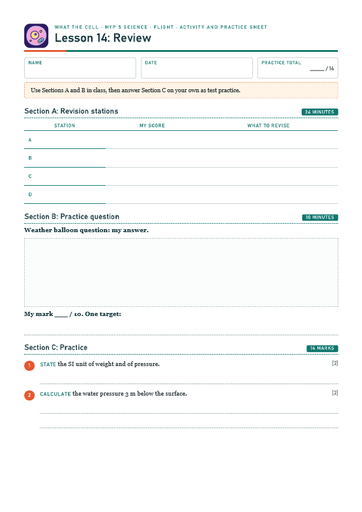

By the end of the lesson you can
- Recall the key words and formulas of the unit
- Apply them to calculations and new situations
- Identify your strongest and weakest topics
- Reflect on the statement of inquiry
Keys: arrows or a presentation clicker move the slides, F for full screen. Slides with a red dot have a video or simulation.
Videos (all 5 minutes or less)
- 4:08
How Airplanes Work: A Simple Explanation for Beginners
Science ABC. While you watch: Which four forces does the video describe? Slide 14.
Print and practise

Activity and practice sheet
Used in the lesson’s activities, with practice questions. Your teacher has the answers.
Download (PDF)Lesson 14 slides
All 20 slides in one file, to read again or print. The video buttons on the slides open YouTube.
Download the slides (PDF)Revising? The Revision tab on the unit page has the unit notes and review.
Notes: Review
How to revise
Use the revision deck on the Revision tab, then the unit notes one section at a time, then the unit review sheet under test conditions.
Calculations
Write the formula, put in the numbers with units, then give the answer with its unit. Weight is in newtons; convert cm² to m².
Command terms
State: give the fact. Describe: say what happens. Explain: say what happens and why. Evaluate: weigh both sides and conclude.
The big idea
Understanding the forces and pressures on objects in fluids has driven the development of flight.
Key words
| weight | W = mg, in newtons |
|---|---|
| density | rho = m/V |
| pressure | P = F/A, in pascals |
| upthrust | weight of fluid displaced |
| lift | upward force from air over a wing |
| Bernoulli's principle | faster fluid, lower pressure |
| momentum | p = mv, conserved in collisions |
| Newton's third law | equal and opposite forces on two objects |